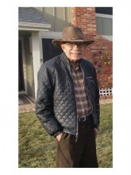

Please note: the AAS Obituaries are temporarily being hosted on this website while their full content is being ingested into the PubPub publishing platform newly adopted by the Bulletin of the American Astronomical Society. When the migration is complete, your existing links will take you to the final, migrated content. Contact peter.williams@aas.org with any questions.
Patrick S. McIntosh (1940-2016)
Long-time solar researcher Patrick McIntosh died on October 16, 2016 after developing symptoms of Alzheimer’s disease about 2010. He is survived by his son Daniel McIntosh, daughter Elisabeth Schmidt and grandsons Taylor and Walker Schmidt, brothers Michael McIntosh and John Wesley "Jack" McIntosh, sister Becky Adams, along with two nieces and two nephews.
Pat McIntosh was born November 19, 1940 in Robinson, Illinois, to Margaret and Carl Kirkwood and later was adopted by his mother's second husband, Virgil L. McIntosh. He graduated from Robinson High School in 1958, where he was first in the state Bausch and Lomb science competition for his research into sunspots. He was awarded a scholarship to Harvard University and graduated in 1962 with a degree in astronomy. One of his 15 minutes of fame was to be a roommate of the infamous Unabomber in one of the Harvard houses!
After graduation, Pat returned to Illinois and married his childhood sweetheart Judy in 1963. From 1960 to 1965 Pat was a Research Assistant at Sacramento Peak Observatory in New Mexico. He worked there under the tutelage of Henry and Elske Smith, John Evans, and Frank Orrall. He and his wife moved there in 1963 after their wedding. While at Sac Peak he and Dr. Orrall established the world’s first continuous, full-disk white-light patrol for study of the birth and evolution of sunspots, and for the detection of white-light flares.
Pat can be considered one of the founding Fathers of what is now called Space Weather. In 1965 he became a research space scientist with the Space Environment Laboratory (SEL - now the Space Weather Prediction Center) at the National Oceanic and Atmospheric Administration’s (NOAA) Environmental Research Laboratories in Boulder, CO. He was one of the first three operational solar forecasters when regular solar-terrestrial services began on December 1, 1965. He trained many of the early NOAA and United States Air Force forecasters and observers, gave invited training sessions for the NASA astronauts who flew on the three Skylab missions in 1973-1974, and was one of the NOAA on-site forecasters in Houston during the Apollo and Skylab missions. He also established the Boulder Solar Observatory for SEL in 1966, which was expanded in 1967 as a NASA Space Physics Analysis Network (SPAN) instrument.
During his career, Pat studied the sun, tracking its solar cycles and documenting sunspots, solar flares and predicting solar activity. He developed a new system of sunspot classification in 1966, which was named after him. The McIntosh classification system modified the Zurich evolutionary sequence of sunspot class and added descriptions of the largest spot and the degree of spottedness in the group interior, to define 60 distinct types of sunspot groups. This system is still widely used today.
In the late 1960s he developed methods for inferring solar magnetic fields from H-alpha imaging observations. He began producing these as H-alpha synoptic charts and, in 1973, they began to be published in NOAA’s Solar-Geophysical Data (SGD) Reports, the famous “Yellow books”. The McIntosh synoptic maps were unique in that they traced magnetic polarity inversion lines, and connected widely separated filaments, fibril patterns, plage corridors and coronal hole boundaries to reveal the large-scale organization of the solar magnetic field. Pat’s legacy will continue as his nearly 45 years of synoptic maps are currently being scanned, digitized and archived under a project led by NCAR/HAO (National Center for Atmospheric Research/High Altitude Observatory) and Boston College, ISR (Institute for Scientific Research). The final, searchable versions of the maps, called the McIntosh Archives, are being made publicly available at NOAA's National Centers for Environmental Information.
His experience with sunspot evolution and solar flares led to him being used as the “expert” cloned in a solar flare prediction expert system, Theo, in 1985. Pat became a senior member of the research staff in 1983, and retired in 1995 after 30 years at NOAA. During his career he traveled extensively to many countries including South America, China, Europe and Australia. Around 1990 he spent 18 months in Australia as a visiting scientist, working with colleagues but also enjoying touring around Australia. He spent several months in China and Australia helping set up early warning systems to detect sunspot disruptions to communications systems.
Pat was a long-time member of the American Astronomical Society, the American Geophysical Union and Sigma Xi. He was a Visiting Scientist to the Australian IPS (Ionosphere Prediction Service) Radio and Space Services from 1989 to 1990, and an invited touring lecturer for the Chinese Academy of Sciences in1990. He was co-convener and session chairman for the first conference on solar predictions: AIAA Solar Activity Observations and Predictions, Huntsville, AL, 1970, and co-edited with Murray Dryer the book of contributions, MIT Press, 1972.
Pat was Working Group chairman for each of the subsequent International Solar-Terrestrial Predictions Workshops: Boulder, 1979; Meudon, France, 1984; Leura, Australia, 1989; Ottawa, Canada, 1992. He was also Working Group leader in each of the International Solar Cycle Workshops: Big Bear Lake, CA, 1986; Fallen Leaf Lake, 1987; Sydney, Australia, 1989; Sacramento Peak Observatory, NM, 1991. He was an organizer of The Physics of Sunspots workshop at Sacramento Peak Observatory, NM, in 1981.
After his retirement in 1995 Pat incorporated two businesses, HelioSynoptics, Inc. to continue his synoptic mapping, and McIntosh Graphics, Inc. through which he pursued his second passion, photography and graphic design. Throughout his career Pat’s enthusiasm for solar physics and astronomy was an inspiration to his colleagues. He will be missed.
Obituary written by: David F. Webb (Boston College)
BAAS Citation: BAAS, 2017, 49, 001